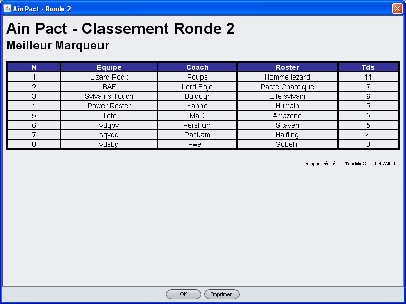

Les sous onglets "Matchs" et "Classement" ont des boutons qui
permettent d'afficher les matchs, les résultats ou les
classements sous forme imprimable:
Ces boutons sont:
- Pour l'onglet Match:
- Vue des matchs
- Vue des résultats
- Pour l'onglet Classement
- Général
- Scoreur
- Passoire
- Destructeur
- Punhing Ball
- Crampon
- Paillasson
Les classement ainsi présentés sont imprimables. La
fenêtre les présentant ont d'ailleurs un bouton "Imprimer".
